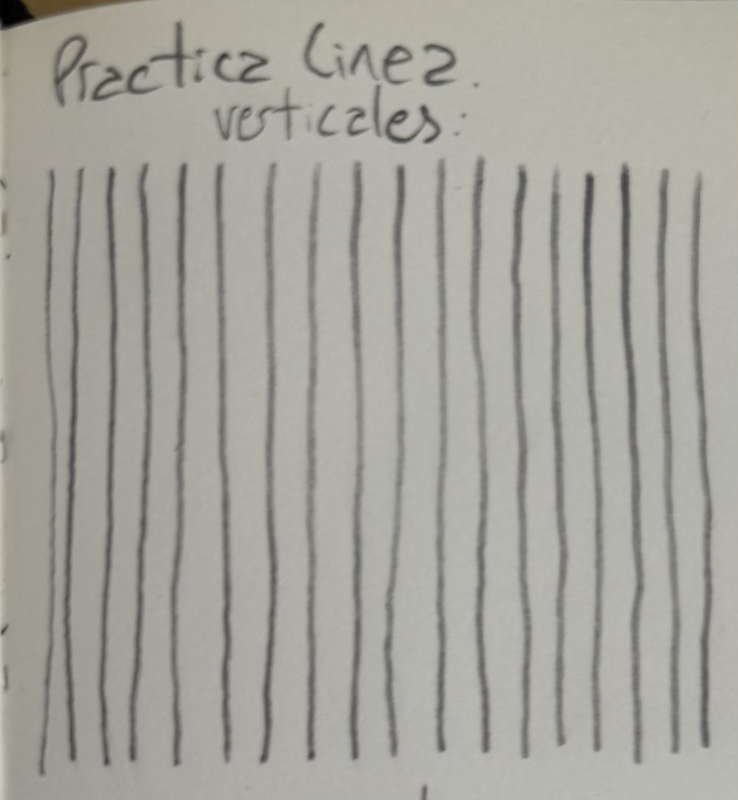
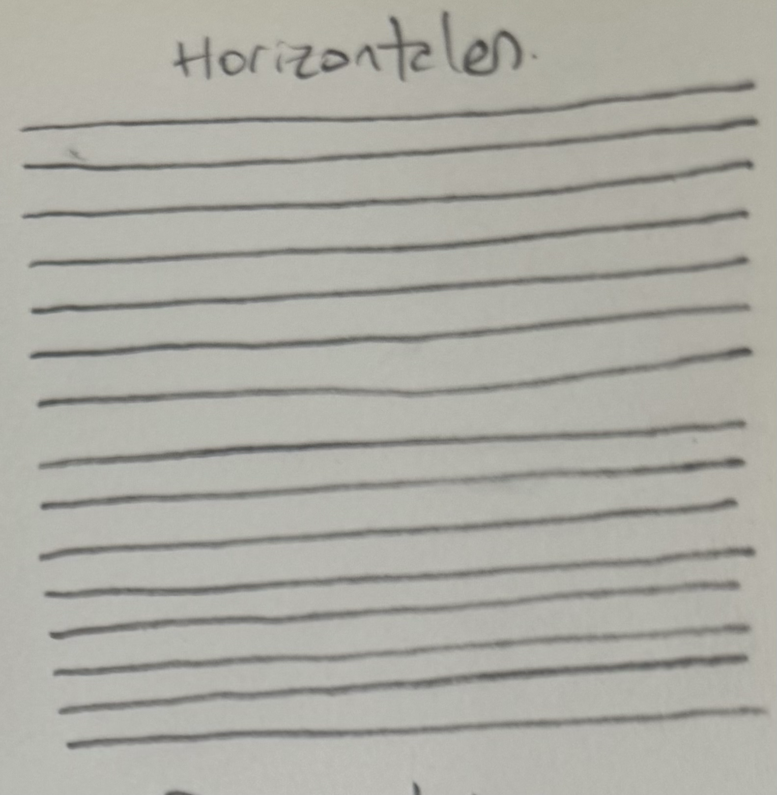
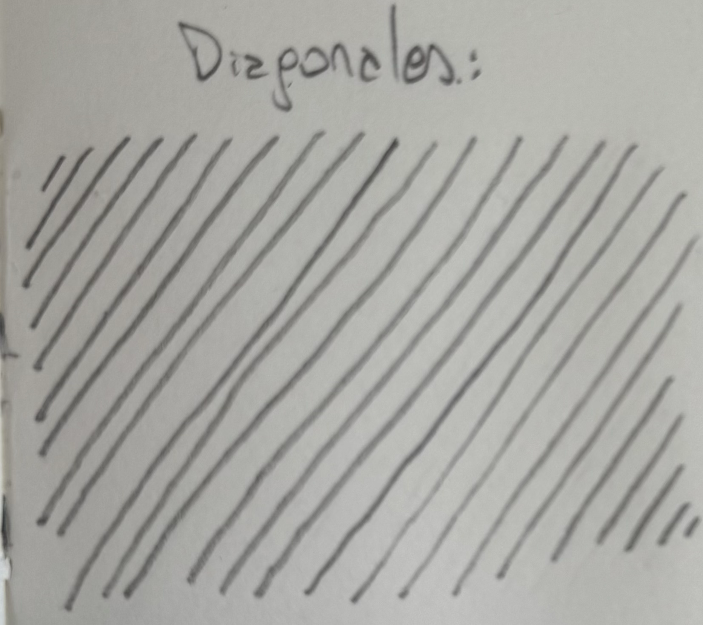
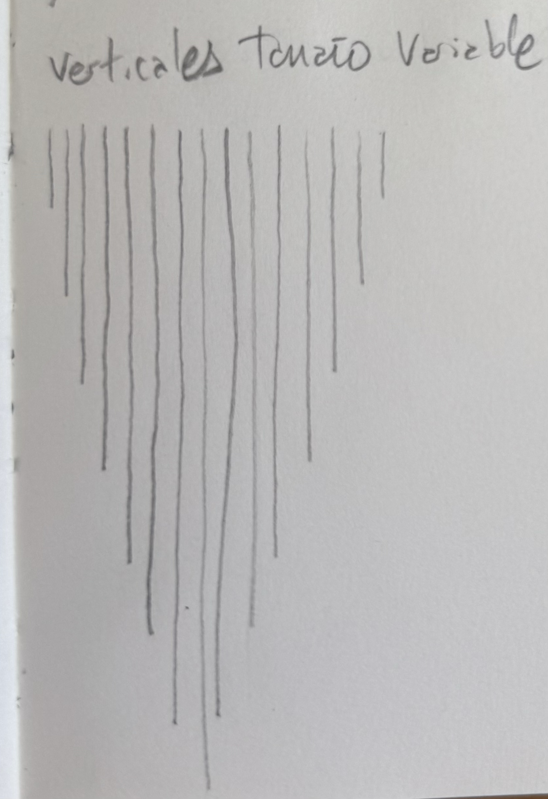
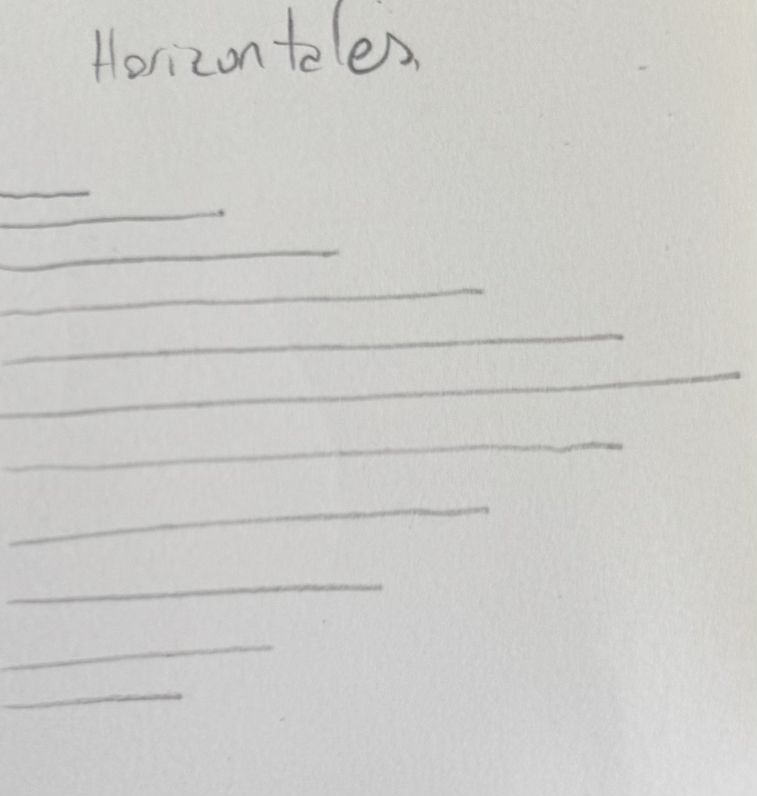

Fundamentos
Para aprender a dibujar como los profesionales, es necesario dominar los fundamentos.
En esta sección se detallan los fundamentos del dibujo, incluyendo linea y trazo, formas 2D y 3D, Perspectiva, entre otros.
| Home | Tutoriales | Recursos | Sobre mí | Contacto |
Sobre esta sección
En esta sección se abordan los conceptos básicos que todo artista debe conocer para desarrollar sus habilidades de dibujo, incluyendo:
- Linea y Trazo.
- Formas 2D.
- Formas 3D.
- Perspectiva con 1, 2 y 3 puntos de fuga.
- Teoría del Color.
Línea y Trazo
Teoría
La línea es la huella del movimiento. Es el recorrido que deja una herramienta sobre una superficie cuando el ojo y la mano actúan juntos. Puede describir, delimitar, sugerir o expresar. En el dibujo, la línea no es solo contorno: es energía, dirección y ritmo.
- Una línea fina y continua puede expresar calma o precisión.
- Una línea interrumpida o suelta puede dar sensación de movimiento o duda.
- Una línea gruesa y gestual transmite fuerza, peso o dramatismo.
El trazo es el modo en que la línea se ejecuta: su presión, velocidad, textura y fluidez. Un mismo lápiz puede generar infinitas variaciones de trazo, dependiendo de cómo lo sostengas, qué ángulo uses o con cuánta confianza lo muevas.
En conjunto, línea y trazo revelan la personalidad del artista. Si observás los bocetos de Leonardo da Vinci o Egon Schiele, notarás que sus líneas parecen una extensión directa de su pensamiento: cada una tiene intención.
Ejemplos de bocetos
 |
Práctica
Todo artista sabe que para mejorar se tiene que practicar, asi que aquí te dejamos algunos ejercicios para que practiques Linea y Trazos.
¿Que necesitas para empezar? Solo un lápiz (o boligrafo) y papel. No es necesario borrar si las lineas te salen mal, equivocarse es completamente normal y te ayudará a reconocer en que debes mejorar.
¿Cuanto tiempo tienes que practicar? No hay un tiempo establecido para esto, cuanto mas tiempo practiques, mejor será tu dominio de la línea y el trazo. Sin embargo, se recomienda seguir estos ejercicios al menos 5 minutos diarios. Puedes utilizar estos ejercicios para calentar antes de empezar a dibujar.
Nivel Básico
Comenzamos con lineas verticales. Realiza una linea vertical de aproximadamente 5cm (no es necesario que uses una regla). Luego, dejando un espacio pequeño, realizaras otra linea similar. La idea es hacer varias lineas verticales en paralelo, con una separación de aproximadamente 0,3cm entre cada linea. Como se puede apreciar en el ejemplo a la derecha, las lineas verticales no son perfectas y no tienen porque serlo. Esta practica te ayudará a ganar confianza y control sobre el lápiz, ademas de mejorar tu coordinación ojo-mano. Así mismo, este tipo de ejercicios te ayudara a reconocer en que angulos te es mas facil o dificil hacer lineas rectas. |
 |
Continuamos con lineas horizontales. Realiza una linea horizontal de aproximadamente 5cm. Luego, dejando un espacio pequeño, realizaras otra linea similar debajo de la inicial. La idea es hacer varias lineas horizontales en paralelo, con una separación de aproximadamente 0,3cm entre cada linea. |
 |
Seguimos con lineas diagonales. Realiza una linea diagonal de aproximadamente 5cm. Luego, dejando un espacio pequeño, realizaras otra linea similar, siguiendo el angulo que has realizado en la anterior. La idea es hacer varias lineas diagonales en paralelo y, como hicimos anteriormente, mantener una separación de aproximadamente 0,3cm entre cada linea. |
 |
Nivel Intermedio
Lineas verticales de tamaño variado Realiza una linea vertical de aproximadamente 1cm. Luego, dejando un espacio pequeño, realizaras otra linea cuyo tamaño será aproximadamente el doble de la anterior. La idea es hacer varias lineas verticales en paralelo, pero aumentar el tamaño de cada linea, con una separación de aproximadamente 0,3cm. |
 |
Continuamos con lineas horizontales de tamaño variable. Realiza una linea horizontal de aproximadamente 1cm. Luego, dejando un espacio pequeño, realizaras otra linea similar debajo de la inicial, un poco mas grande. La idea es hacer varias lineas horizontales en paralelo, pero aumentar el tamaño de cada linea, con una separación de aproximadamente 0,3cm. |
 |